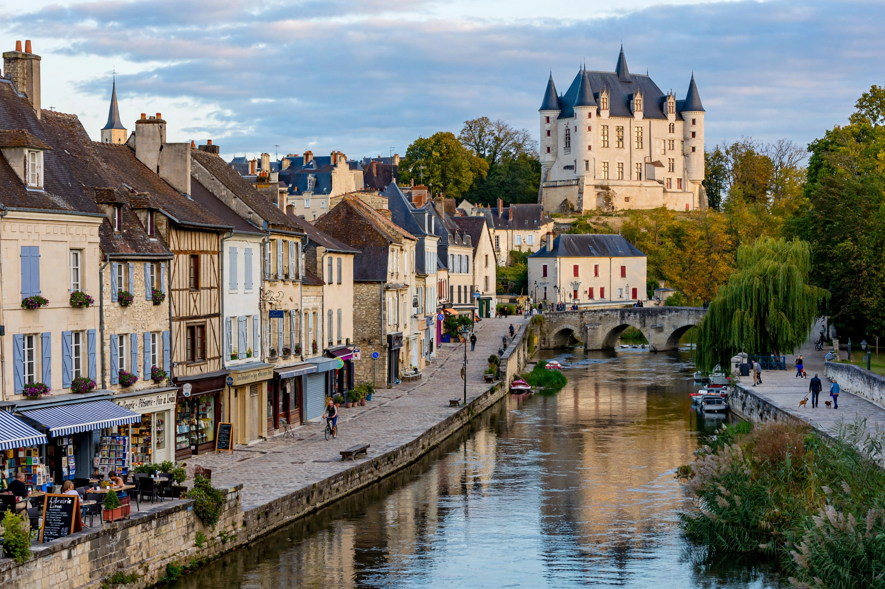

Châteauroux is a commune in central France, the prefecture of the Indre department in Centre-Val de Loire, on the Indre river. It is the department's largest town, with a population of roughly 43,000.

| Country | France |
|---|---|
| Region | Centre-Val de Loire |
| Department | Indre (prefecture) |
The town grew around the Château Raoul, founded in the 10th century by Raoul of Déols, from which it takes its name. Later a centre for cloth and leather, it hosted a major US air base at nearby Déols in the 1950s. Actor Gérard Depardieu was born here.
Landmarks include the Château Raoul, the Bertrand museum in the Hôtel Bertrand, and the churches of Saint-André and Notre-Dame. The football club LB Châteauroux plays at Stade Gaston Petit, and the town hosted shooting events for the Paris 2024 Olympics at the national shooting centre.